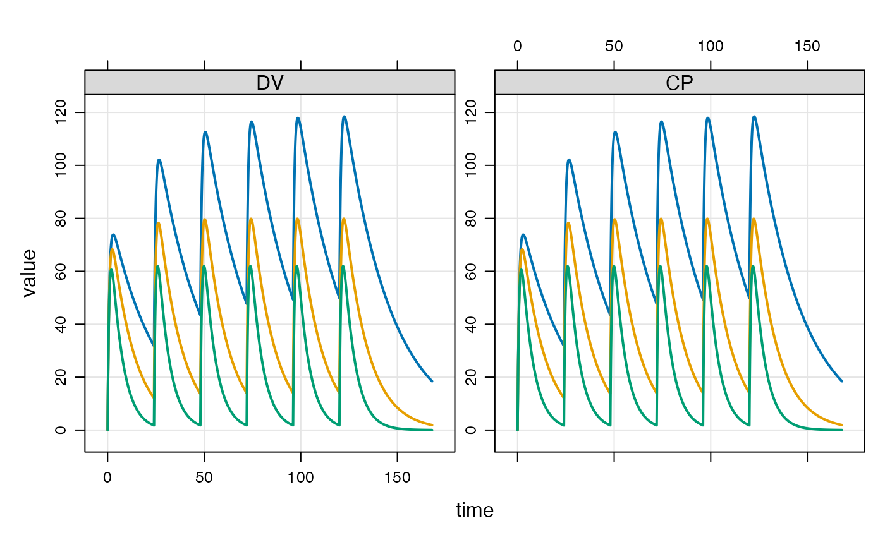

mrgsolve is an R package maintained under the auspices of Metrum Research Group that facilitates simulation from models based on systems of ordinary differential equations (ODE) that are typically employed for understanding pharmacokinetics, pharmacodynamics, and systems biology and pharmacology. mrgsolve consists of computer code written in the R and C++ languages, providing an interface to a C++ translation of the lsoda differential equation solver. See aboutsolver for more information.
Resources
Main mrgsolve resource page: https://mrgsolve.github.io
User guide: https://mrgsolve.github.io/user_guide
Vignettes: https://mrgsolve.github.io/vignettes
Package-wide options
mrgolve.project: sets the default project director (mread)mrgsolve.soloc: sets the default package build directory (mread)mrgsolve_mread_quiet: don't print messages during mreadmrgsolve.update.strict: ifTRUE, print warning when trying to update an item in the model object that doesn't exist
Examples
## example("mrgsolve") mod <- mrgsolve::house(delta=0.1) %>% param(CL=0.5) events <- ev(amt=1000, cmt=1, addl=5, ii=24) events#> Events: #> time amt ii addl cmt evid #> 1 0 1000 24 5 1 1mod#> #> #> -------------- source: housemodel.cpp -------------- #> #> project: /private/var/fol...solve/project #> shared object: mrgsolve #> #> time: start: 0 end: 120 delta: 0.1 #> add: <none> #> #> compartments: GUT CENT RESP [3] #> parameters: CL VC KA F1 D1 WT SEX WTCL WTVC SEXCL #> SEXVC KIN KOUT IC50 [14] #> captures: DV CP [2] #> omega: 4x4 #> sigma: 1x1 #> #> solver: atol: 1e-08 rtol: 1e-08 maxsteps: 20k #> ------------------------------------------------------see(mod)#> #> Model file: housemodel.cpp #> $PROB #> #> # `mrgsolve` housemodel #> #> This model is compiled with `mrgsolve`. #> #> - Author: Metrum Research Group, LLC #> - Description: Generic indirect response PK/PD model #> - Covariates: Weight, female sex #> - Random effects: CL, VC, KA, KOUT #> - Error model: exponential #> #> #> #> $PLUGIN base #> #> $PARAM @annotated #> CL : 1 : Clearance (L/hr) #> VC : 20 : Volume of distribution (L) #> KA : 1.2 : Absorption rate constant (1/hr) #> F1 : 1.0 : Bioavailability fraction (.) #> D1 : 2.0 : Infusion duration (hr) #> WT : 70 : Weight (kg) #> SEX : 0 : Covariate female sex #> WTCL : 0.75 : Exponent WT on CL #> WTVC : 1.00 : Exponent WT on VC #> SEXCL: 0.7 : Prop cov effect on CL #> SEXVC: 0.85 : Prop cov effect on VC #> KIN : 100 : Resp prod rate constant (1/hr) #> KOUT : 2 : Resp elim rate constant (1/hr) #> IC50 : 10 : Conc giving 50% max resp (ng/ml) #> #> $CMT @annotated #> GUT : Dosing compartment (mg) #> CENT : Central compartment (mg) #> RESP : Response (unitless) #> #> $OMEGA @labels ECL EVC EKA EKOUT #> 0 0 0 0 #> #> $SIGMA @labels EXPO #> 0 #> #> $SET end=120, delta=0.25 #> #> #> $GLOBAL #> #define CP (CENT/VCi) #> #define INH (CP/(IC50+CP)) #> #> typedef double localdouble; #> #> $MAIN #> F_GUT = F1; #> D_CENT = D1; #> #> double CLi = exp(log(CL) + WTCL*log(WT/70) + log(SEXCL)*SEX + ECL); #> double VCi = exp(log(VC) + WTVC*log(WT/70) + log(SEXVC)*SEX + EVC); #> double KAi = exp(log(KA) + EKA); #> double KOUTi = exp(log(KOUT) + EKOUT); #> #> RESP_0 = KIN/KOUTi; #> #> $ODE #> dxdt_GUT = -KAi*GUT; #> dxdt_CENT = KAi*GUT - (CLi/VCi)*CENT; #> dxdt_RESP = KIN*(1-INH) - KOUTi*RESP; #> #> $TABLE #> double DV = CP*exp(EXPO); #> #> $CAPTURE @annotated #> DV: Dependent variable (ng/ml) #> CP: Plasma concentration (ng/ml) #>#> #> Model parameters (N=14): #> name value . name value #> CL 0.5 | SEX 0 #> D1 2 | SEXCL 0.7 #> F1 1 | SEXVC 0.85 #> IC50 10 | VC 20 #> KA 1.2 | WT 70 #> KIN 100 | WTCL 0.75 #> KOUT 2 | WTVC 1init(mod)#> #> Model initial conditions (N=3): #> name value . name value #> CENT (2) 0 | RESP (3) 50 #> GUT (1) 0 | . ... .#> ID time GUT CENT RESP DV CP #> 1 1 0.0 0.0000 0.0000 50.00000 0.000000 0.000000 #> 2 1 0.0 1000.0000 0.0000 50.00000 0.000000 0.000000 #> 3 1 0.1 886.9204 112.9355 48.03655 5.646775 5.646775 #> 4 1 0.2 786.6279 212.8183 44.31899 10.640917 10.640917 #> 5 1 0.3 697.6763 301.1252 40.24379 15.056258 15.056258 #> 6 1 0.4 618.7834 379.1657 36.29753 18.958286 18.958286tail(out)#> ID time GUT CENT RESP DV CP #> 1677 1 167.5 1.218837e-22 671.4739 11.36504 33.57369 33.57369 #> 1678 1 167.6 1.077787e-22 669.7973 11.38701 33.48987 33.48987 #> 1679 1 167.7 9.538416e-23 668.1249 11.40901 33.40625 33.40625 #> 1680 1 167.8 8.441717e-23 666.4567 11.43104 33.32283 33.32283 #> 1681 1 167.9 7.466550e-23 664.7926 11.45310 33.23963 33.23963 #> 1682 1 168.0 6.610142e-23 663.1327 11.47519 33.15664 33.15664dim(out)#> [1] 1682 7#> 'data.frame': 1 obs. of 7 variables: #> $ ID : num 1 #> $ time: num 72 #> $ GUT : num 1000 #> $ CENT: num 1037 #> $ RESP: num 8 #> $ DV : num 51.8 #> $ CP : num 51.8idata <- data.frame(ID=c(1,2,3), CL=c(0.5,1,2),VC=12) out <- mod %>% ev(events) %>% mrgsim(end=168, idata=idata, req="") plot(out)#> ID time evid amt cmt GUT CENT RESP DV CP #> 1 1 0.0 0 0 0 0.0000 0.0000 50.00000 0.000000 0.000000 #> 2 1 0.0 1 1000 1 1000.0000 0.0000 50.00000 0.000000 0.000000 #> 3 1 0.1 0 0 0 886.9204 112.9355 48.03655 5.646775 5.646775 #> 4 1 0.2 0 0 0 786.6279 212.8183 44.31899 10.640917 10.640917 #> 5 1 0.3 0 0 0 697.6763 301.1252 40.24379 15.056258 15.056258 #> 6 1 0.4 0 0 0 618.7834 379.1657 36.29753 18.958286 18.958286ev1 <- ev(amt=500, cmt=2,rate=10) ev2 <- ev(amt=100, cmt=1, time=54, ii=8, addl=10) events <- c(ev1+ev2) events#> Events: #> time amt rate cmt evid ii addl #> 1 0 500 10 2 1 0 0 #> 2 54 100 0 1 1 8 10#> ID amt cmt time addl ii rate evid #> 1 1 1000 1 0 3 24 0 1 #> 2 2 1000 2 0 0 0 20 1 #> 3 3 1000 1 0 0 0 0 1 #> 4 3 500 1 24 0 0 0 1 #> 5 3 500 1 48 0 0 0 1 #> 6 3 1000 1 72 0 0 0 1 #> 7 4 2000 2 0 2 48 100 1 #> 8 5 1000 1 0 0 0 0 1 #> 9 5 5000 1 24 0 0 60 1## idata data(exidata) out <- mod %>% ev(amt=1000, cmt=1) %>% idata_set(exidata) %>% mrgsim(end=72) plot(out, CP~., as="log10")